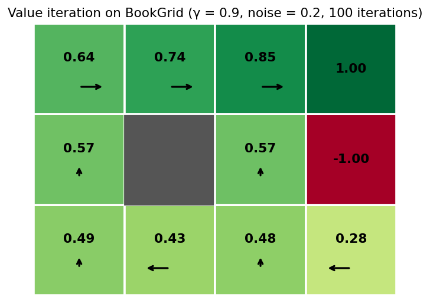
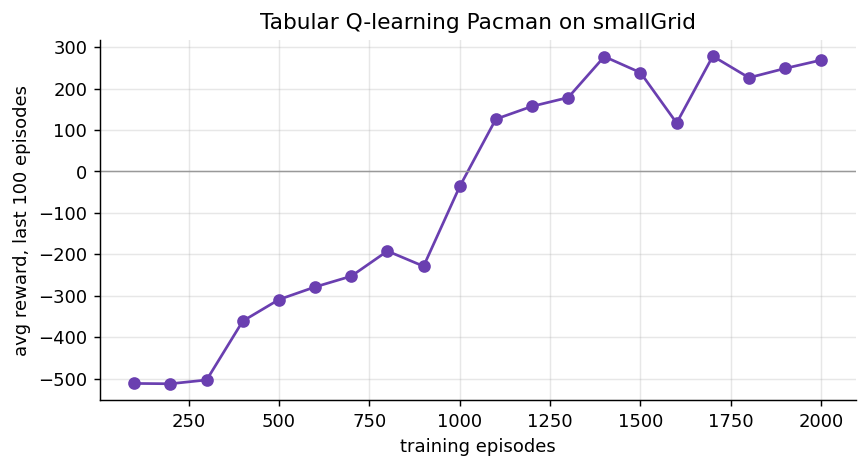

← Back to CS 188 Projects
Learning from
CS 188 | Project 3 | Summer 2026
Learning from
Rewards.
Solving Markov decision processes with value iteration when the model is known, then learning without a model through Q-learning. Approximate Q-learning with a few features wins every test game on a full-size board after only 50 training games.
HeadlineApproximate Q-learning: 10/10 wins on the medium board after 50 training games · tabular Q-learning from −511 to +269 average reward
- Course
- CS 188, Introduction to Artificial Intelligence
- Project
- Project 3: Reinforcement Learning
- Timeline
- Summer 2026, UC Berkeley
- Topics
- MDPs, value iteration, Q-learning, function approximation
25/25autograder score, plus 1 bonus point
10/10wins on the medium board with approximate Q-learning
50training games needed with features
+780gain in average reward over tabular Q-learning training
Overview
An agent has to act well in a world with uncertain outcomes. When the transition model and rewards are known (a gridworld), the optimal policy can be computed directly. When they are not (Pacman, a crawling robot), the agent has to learn from trial and error. The project goes from planning to learning to generalizing.
Approach
- Value iteration. Repeated Bellman updates over every state until the values settle, then a policy that picks the action with the best expected value. I also implemented prioritized sweeping, which updates the states whose values are most out of date first (the bonus point).
- Q-learning. Learns action values directly from experience, with no model, using a temporal-difference update after every step.
- Exploration. ε-greedy action selection: mostly take the best-known action, but sometimes act randomly so the agent keeps discovering better options.
- Approximate Q-learning. Instead of a table entry per state, Q is a weighted sum of features (bias, ghosts one step away, whether a move eats food, distance to the closest food). The weights are learned with the same TD error, so experience in one state transfers to similar states.
Value iteration: Vk+1(s) = maxa Σs′ T(s, a, s′) [R(s, a, s′) + γ Vk(s′)]
Q-learning: Q(s, a) ← (1 − α) Q(s, a) + α [r + γ maxa′ Q(s′, a′)]
Approximate: Q(s, a) = Σi wi fi(s, a), wi ← wi + α · δ · fi(s, a)
Q-learning: Q(s, a) ← (1 − α) Q(s, a) + α [r + γ maxa′ Q(s′, a′)]
Approximate: Q(s, a) = Σi wi fi(s, a), wi ← wi + α · δ · fi(s, a)
γ is the discount, α the learning rate, δ = r + γ max Q(s′, a′) − Q(s, a) the temporal-difference error.
Results
| Experiment | Result |
|---|---|
| Value iteration, book gridworld (100 iterations) | Start-state value 0.49; policy routes around the −1 exit |
| Tabular Q-learning Pacman, small grid (2,000 training games) | Average reward −511 → +269; 10/10 test wins |
| Approximate Q-learning, medium board (50 training games) | 10/10 test wins, average score 1,323 |


What I learned
- Planning and learning use the same equation. Q-learning is the Bellman update with the expectation replaced by samples, which made the jump from MDPs to RL feel natural.
- Exploration is a real cost. The learning curve spends its first thousand episodes losing: that is the price of discovering what works.
- Features are what make RL scale. A table needed 2,000 games for a tiny grid, while four features were enough to win a full board after 50 games, because what the agent learned in one state applied everywhere similar.
Project framework and specifications are from the CS 188 course staff (the Berkeley Pacman AI projects). The implementation and write-up are my own; the code is kept private in line with course academic-integrity policy. Results come from re-running my finished code.